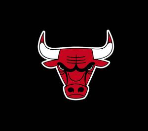
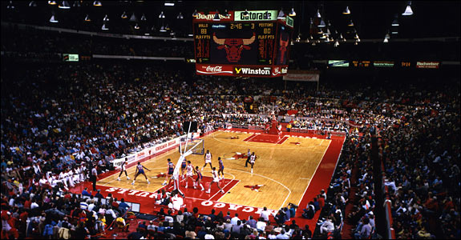
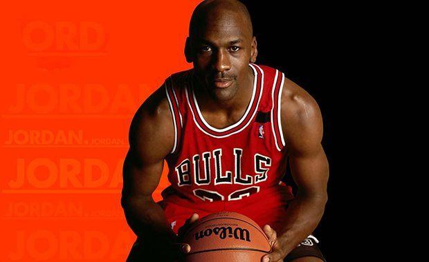

Chicago Bulls
| Championships Won |
6 |
| Year Founded |
1966 |
| Net Worth |
$2.5 billion |
| Founder |
Dick Klein |
| Arena |
United Center |



Early Years
The Chicago Bulls became a part of the National Basketball Association on January 16, 1966. The Bulls were the third team to be formed in Chicago,
after the Chicago Stags (1946–1950) and the Chicago Packers(now the Washington Wizards). During their very first season in the league the Bulls posted
the best season from any expansion team in NBA history. They even made the playoffs in their first season which is a remarkable feat. Fan interest in the
team was very low with some games having under 1000 people in attendence. But soon after their fourth season the attendence totals soared to over 10000.
Success
The Chicago Bulls have 6 championships which is less than the Lakers and the Celtics but the Chicago Bulls were formed 20 years after them too. If they
were created earlier the number of championships may have been well over 10. The bulls also have 6 conference titles and 9 division titles to their name. The
Bulls have been home to many great players including perhaps the greatest, Michael Jordan. They have 4 retired jerseys of: Jerry Sloan, Bob Love, Michael Jordan,
and Scottie Pippen. The Bulls are an extremely illustrious franchise and will continue to be one of the most successful teams in the league for many years too come.
Best Players in Franchise History
- Michael Jordan
- Scottie Pippen
- Jerry Sloan
- Bob Love
- Derrick Rose
- Denis Rodman